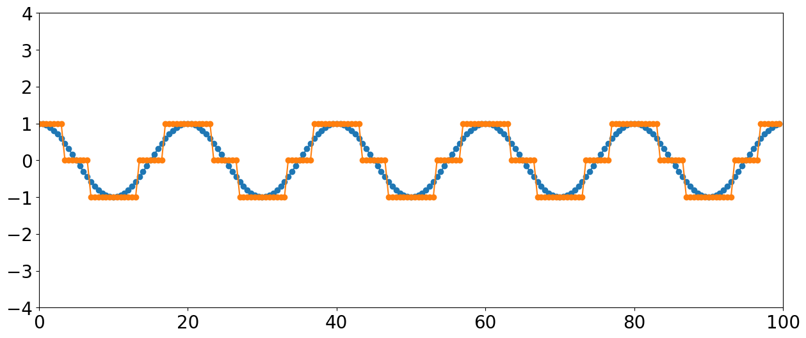
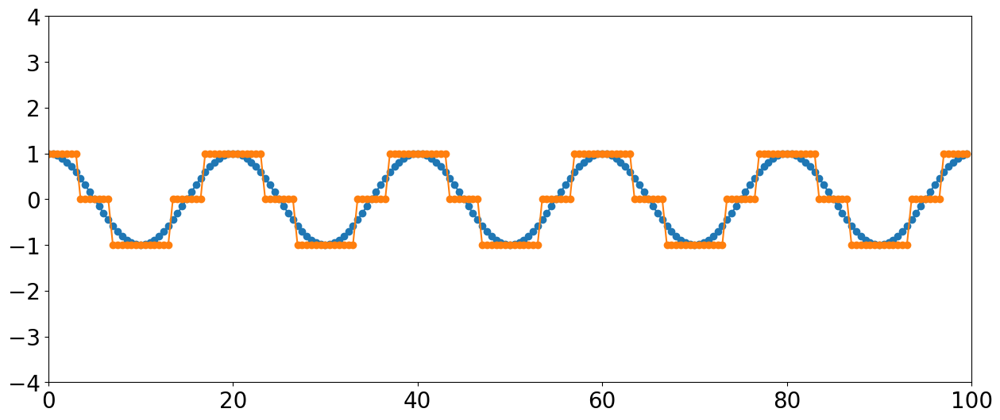
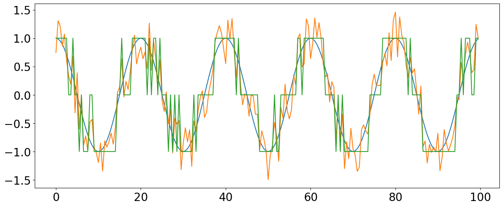

Sampling
You've probably already been introduced to the idea of sampling rate and the Nyquist theorem. We're not going to go into the math here, but just review the basic concepts.
Remember that sound is continuous analog information. In order to store a wave of sound information on a computer, it needs to be converted to numbers that can represent this information.
Each number represents a discrete point along the analog signal. If we want to play back that representation, the computer has to "connect the dots" to recreate the sound wave.
The extent to which the digitized sound matches the original analog sound depends on the accuracy of the sampled representations. There are two variables that determine this acccuracy: bit depth and sample rate.
The standard sampling rate for most types of audio (e.g., CD quality) is 44,100. This means that there are 44,100 samples recorded every second.
Why do we use this rate?
It first relates to the range of human hearing.
(which is?)
Humans with "perfect" hearing can hear sounds as low as 20Hz and as high as 20,000 Hz.
However, by the time most people are in their late 20s they are unlikely to have this range anymore. The high end is the first to go. Here's a depressing (or ear-care-motivating?) graph:

Refresher: not all frequencies are heard as equally loud. Some frequencies need a higher volume to be detectable by the ear, while others we are very sensitive to.
The following graph shows the quietest sounds (technically, the threshold sound intensity) a healthy 20-year-old can hear. For frequencies above 15000 Hz, threshold gets worse very rapidly.
Aside #1: Notice the dips in sensitivity between 2 and 5KHz? Any idea why this range is important?

Back to sampling rate! In order to capture a sound signal (as faithfully as possible), what is the slowest sampling rate we can use?
To be able to accurately capture a frequency we need to have a sample rate that's at least twice the fastest frequency otherwise we get aliasing (more on this later). This is minimum sample rate is referred to as the Nyquist frequency.
We don't want to cut off frequencies that are in the normal range of human hearing, the default sampling rate is a bit more than double of the conservative upper-limit of human hearing.
Aside #2: Anyone know why we don't just sample at 40,000?
One reason has to do with compatibility with video recording. 44,100 samples/s can fit digital audio samples into an analog video channel running 25 or 30 FPS.
However, for that we'd only need 40,050 samples/s.
It has to do with leaving space for something called a *transition band* or a *skirt* when attenuating frequencies over the 20k limit, we want to avoid a sharp "cutoff" and instead offer a smooth gradual decrease. (More on this later).
Of course, there are other sampling rates possible. For instance, 48kHz is the standard for DVD quality. Some people choose to record at 96kHz (e.g., standard for HD DVD and Blue Ray).
Alasing
Recap: the sample rate needs to be frequent enough to capture the amplitude changes of extremely fast moving frequencies. So we set our sampling rate to be roughly double the frequency of the maximum frequency we are capable of hearing.
Say we're using a sampling rate of 44,100. What frequencies might we record that would be problematic according to the Nyquist theorem?
Any frequency content above the Nyquist frequency (defined as half the sample rate), will create artifacts. Let's look at an example:

Can we predict where artefacts will be (in terms of frequency content) due to aliasing??
Hint: look at relation between the sample rate, desired frequency, and resulting frequency
Yes. They will appear at the absolute value of the frequency - sample rate (times nearest integer of f/fs if > 1)
nint = nearest integer
formula for finding alias frequency:
$ F(a) = | f - fs * nint(\frac{f}{fs}) | $
Let's imagine we were sampling a signal (at 44,100) that included the following frequencies (all in KHz): 22.0, 24.0, 33.0, and 40.0. We simply subtract the the "problem" or artefact frequency from sample rate:
22.0 = # Is this a problem?
22.1 = #Is this a problem?
24.0 = # What about this?
33.0 = # Or this?
40.0 = # Or this?
So in the last two cases, we end up with perceptual artifacts in the recorded sound. This phenomenon is called aliasing (or "fake" frequencies.) So, how do we avoid this problem?
The way we deal with this is to apply a low-pass filter (which allow frequencies below some threshold--typically the Nyquist--to pass through) to remove any of these extreme high frequencies before sampling to ensure we don't get artifacts.
This is called "anti-aliasing."This is applied before the sound gets sampled through an analog to digital converter.
Since we are not using a DAW and are creating sounds "from scratch" it will be important you understand this concept.
Note that we can also get aliasing of different frequencies by sampling at lower sampling rates. It all depends on the relation between the frequencies sampled and the sampling rate.
In either case, if a sine wave is changing quickly, and the sampling rate isn't fast enough to capture it, this can result in a set of samples that look identical to a sine wave of lower frequency!
As we saw above, the effect of this is that the higher-frequency contributions now act as impostors (i.e., aliases) of lower-frequency information.
IF one recorded high frequency content intentionally, how could we play it back so that we could hear it?
(By slowing down the sampling rate). You will play around with altering the "playback" sampling rate of recodings during our class activity.
If we have a recording sampled at 44,100 but we tell a program that the original sample rate was really 22,050 what will be the effect?
If we have a recording sampled at 22,050 but we tell a player to play back at a sample rate of 44,100 what will be the effect?
These are radio emissions from Saturn. The radio waves are closely related to the auroras near the poles of the planet.
This recording has been modified so that 73 seconds corresponds to 27 minutes. Since the frequencies of these emissions are well above human hearing range, they are shifted downward by a factor of 44.

Bit Depth
Bit depth refers to the resolution of the information that gets stored in a sample. That is, it refers to the size (or length, or "depth") of numbers that can be used to store the amplitude information.
A digital audio sample is measured as a string of binary numbers. Just as we can get more precision by including more and more places after a decimal point for real numbers, binary representations can get more precise by adding more bits.
2 bits allows for 4 possibilities (0 and 1 at 2 locations); 3 bits allows for 8 possibilities; 4 bits has 16 options (below); 5 bits gives 32 options…. And it doubles each time.
Quantization
Think of quantization as a kind of rounding or "binning" into a fixed number of discrete categories.
Just like with the last example, if we have a small number of bins to represent a large range of values, then we can think of quantization errors as "rounding errors."
A quantization error is the difference between the actual value and the rounded or "binned" value. Quantization error typically only matters when it is relatively large.
In the above example our sine wave will start to sound more like a square wave due to this quantization error arising from the reduction of the bit depth of our signal.
Quantization distortion and Dithering
Dither is a technique for dealing with something called quantization distortion. This tends to become a problem for signals recorded at very low amplitudes. These amplitudes are too small compared to the space between available quantization levels (defined by the bit depth).
In other words, you get a fairly large rounding error relative to the object's size...
 

Note the large amount of quantization distortion happening for this lower amplitude signal with only 3 levels. If we reduced the signal by half, the entire thing would be rounded to zero and the signal would disappear entirely.
Dithering
Dither is typically applied when converting something from a higher resolution to a lower resolution (or bit depth), when these kinds of "rounding errors" create noticeable artifacts in the sound. Dithering is a process where one intentionally adds a very small amount of noise to the signal *before* quantization.
If we now quantize this messy signal with the noise added, the sinusoidal signal can still be extracted statistically from the noise. The noise smooths-out the transition between bit levels, eliminating the threshold problem.
When used in recording, the actual amount of noise added is very tiny and not noticable in the final mixed sound.
If you are using a sound recorded in 24-bit, you have so many quantization levels for amplitude that you are practically guaranteed never to have quantization distortion. However, it can become an issue when noise "adds up" from repeated signal processing, is sometimes noticable on 16 bit recordings, especially in lower amplitude ranges (~ -60dBFS).